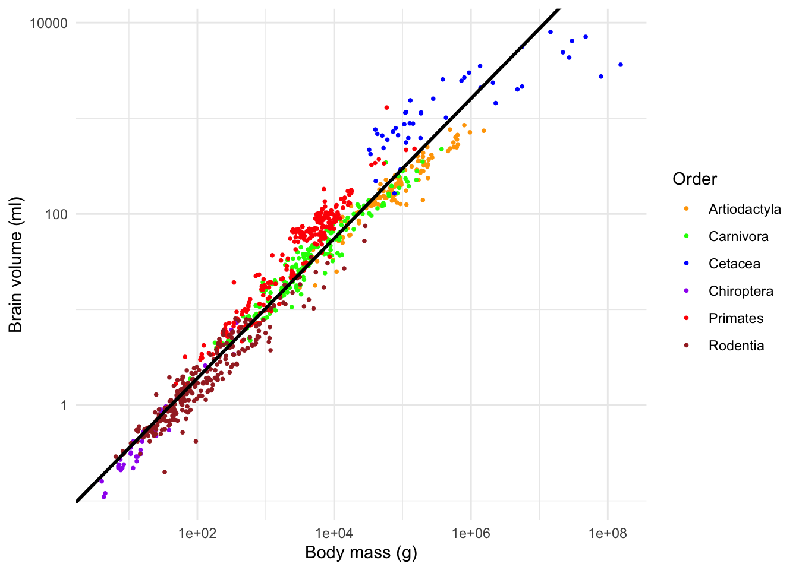
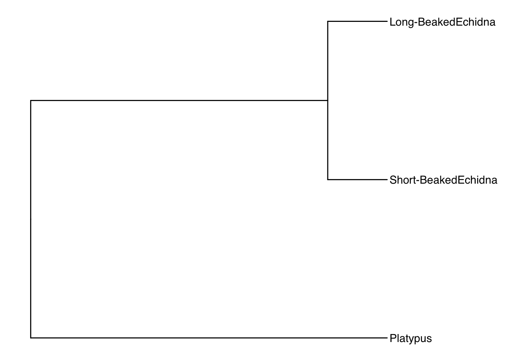
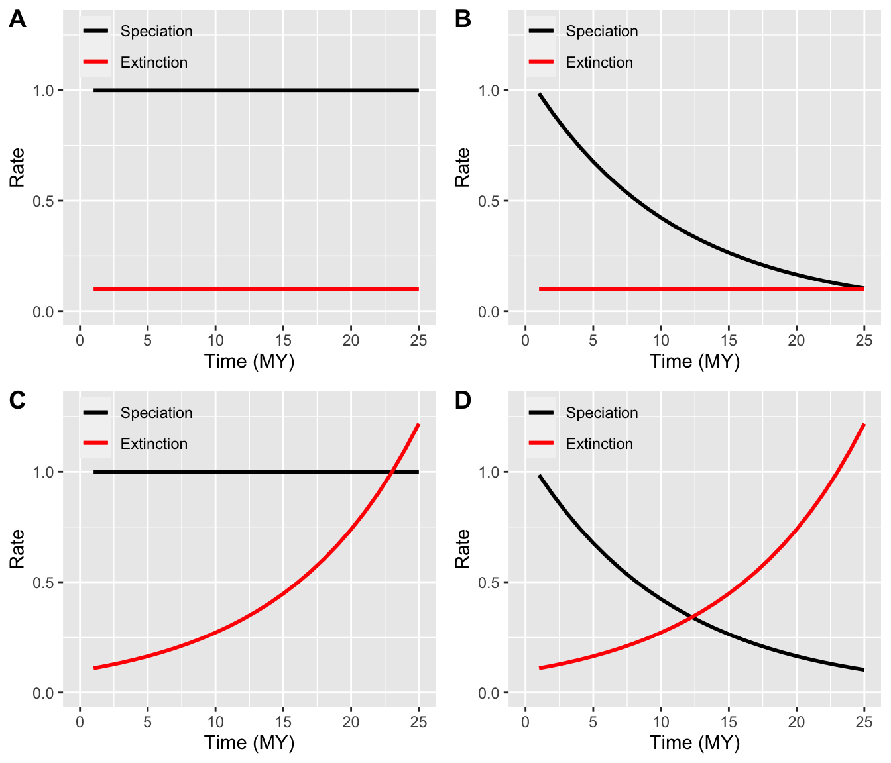
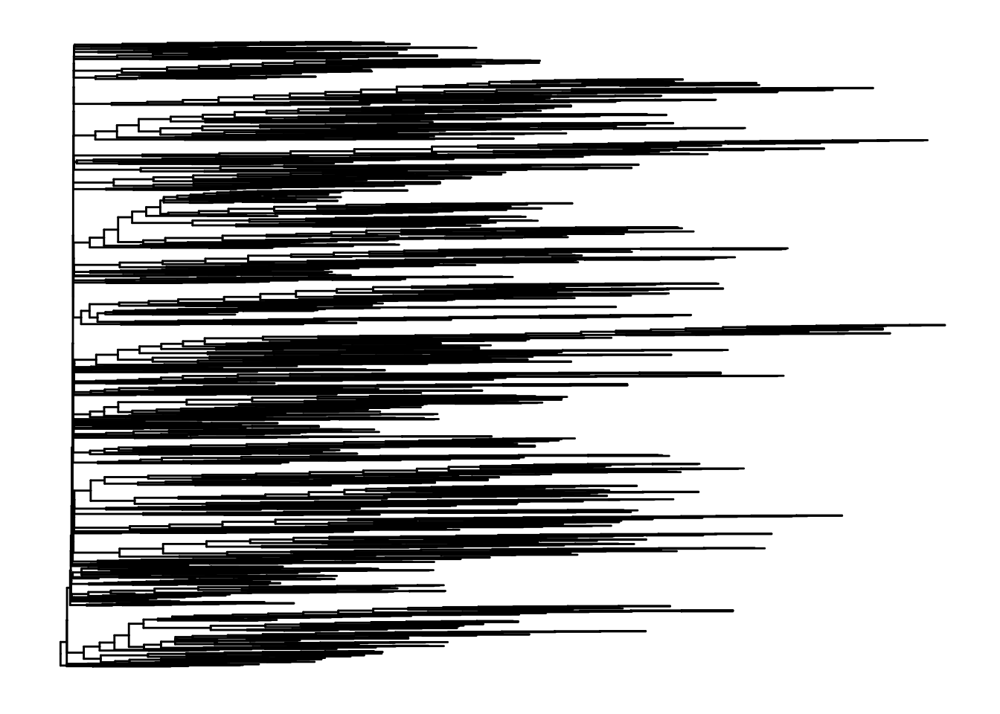

Chapter 6 ggtree
The syntax we'll be using here is a little different that what you may be used to so don't get intimidated. ggtree uses the same syntax as a package called ggplot2. This works by creating layers (known as geoms) and plotting them over each other.
We'll start by using ggtree to plot our tree. This is the base layer of the plot.
ggtree(tree)
You may want to plot the same tree as a cladogram. To do this, disable branch lengths.
ggtree(tree, branch.length = "none")
There are many other options we can include to customise our tree.
ggtree(tree,
branch.length="none",
color="blue",
size=2,
linetype=3)
6.1 Geoms
Geoms are new layers to plot on or alongside your tree. Here I'm creating the plot as an object in R. You should see "p" appear in your environment but no plot will appear.
p <- ggtree(tree)Now let's plot it whilst adding new layers. Note that the hash denotes text not to be interpreted by R. This is a great way to annotate your code so that you can recall what it does!
p + geom_nodepoint() #Add node points
p + geom_tippoint() # add tip points
p + geom_tiplab() # Label the tips
These geoms can be combined as you see fit. This gives you a lot of flexibility in how you plot your trees.
p +
geom_tiplab(offset = 2, color = "purple") +
geom_nodepoint(color = "blue", size = 2) +
geom_tippoint(color = "red", size = 4) +
ggtitle("A phylogeny of letters. For some reason...")
6.2 Labelling clades
To label clades, we need to be able to identify the node of the most recent common ancestor. The function MRCA tells us that the common ancestor of C and E is node 17.
MRCA(tree, tip = c("C", "E"))[1] 17Let's use a new geom to label the clade.
ggtree(tree) +
geom_tiplab() +
geom_cladelabel(node=17,
label="A clade",
color="red2",
offset=1)
Pretty good. But there are other options. Again it's a matter of personal preference. You may prefer to overlay a translucent rectangle over your clade of interest.
ggtree(tree) +
geom_tiplab() +
geom_hilight(node=17, fill="gold")